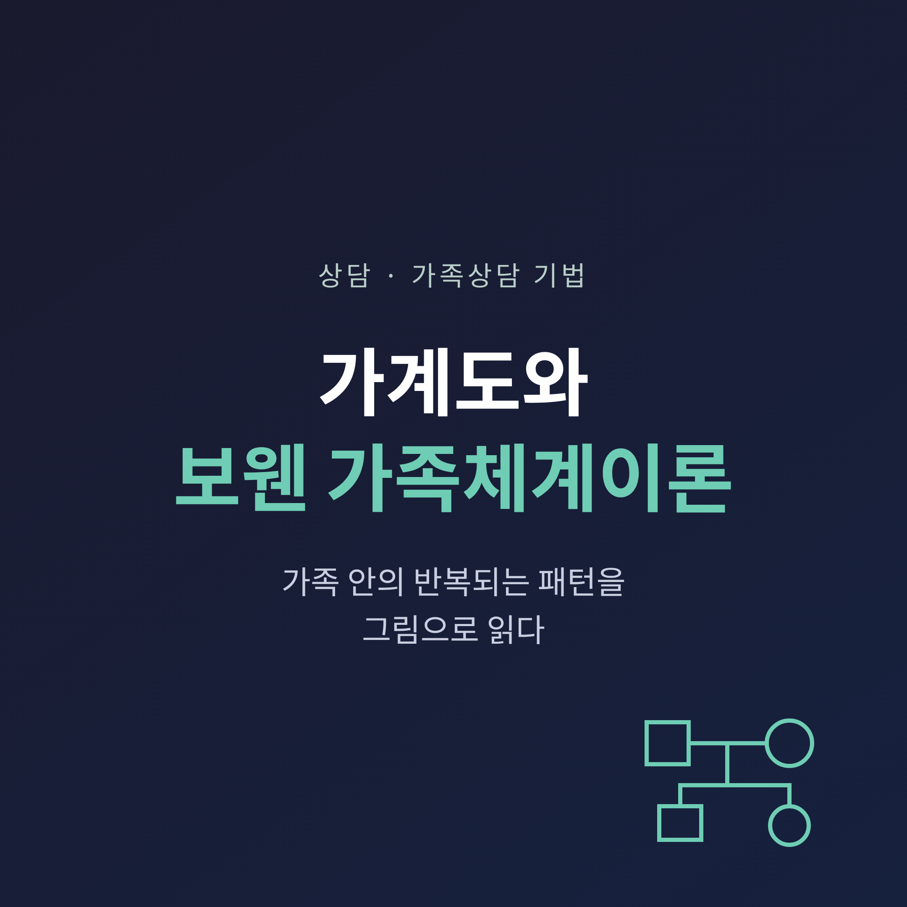
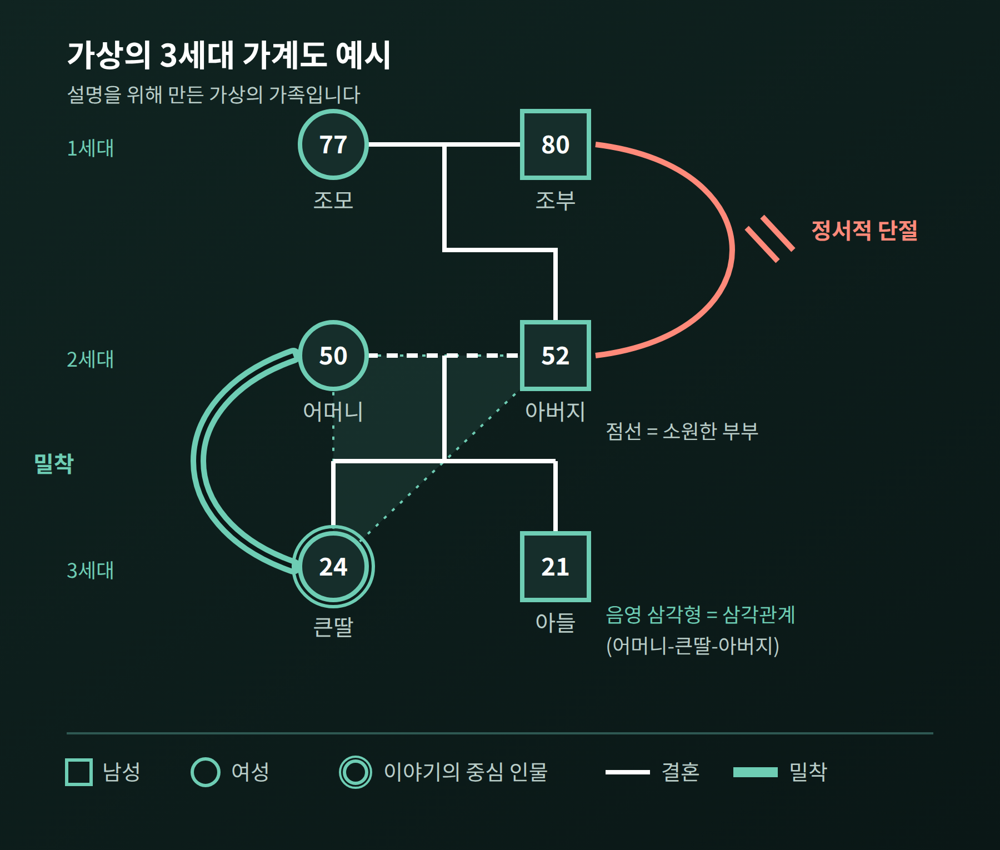
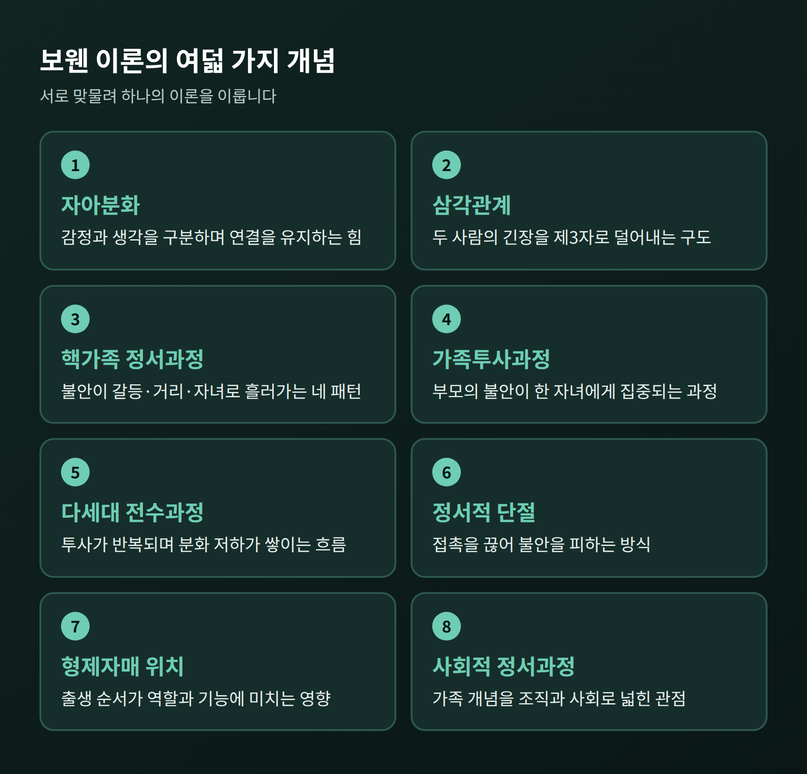
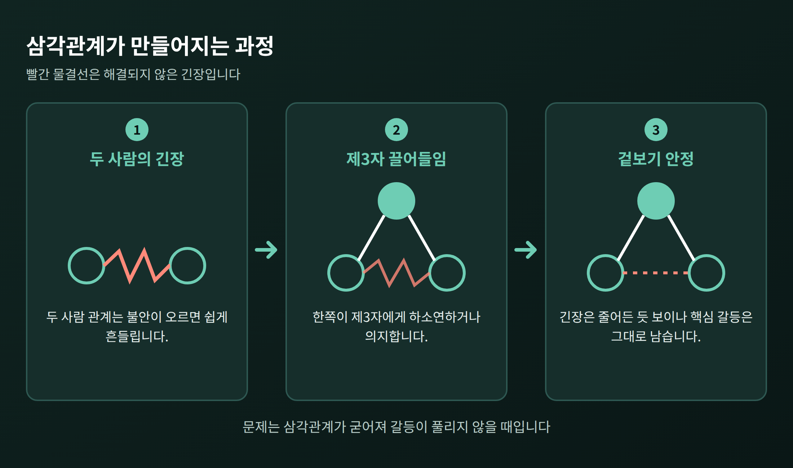
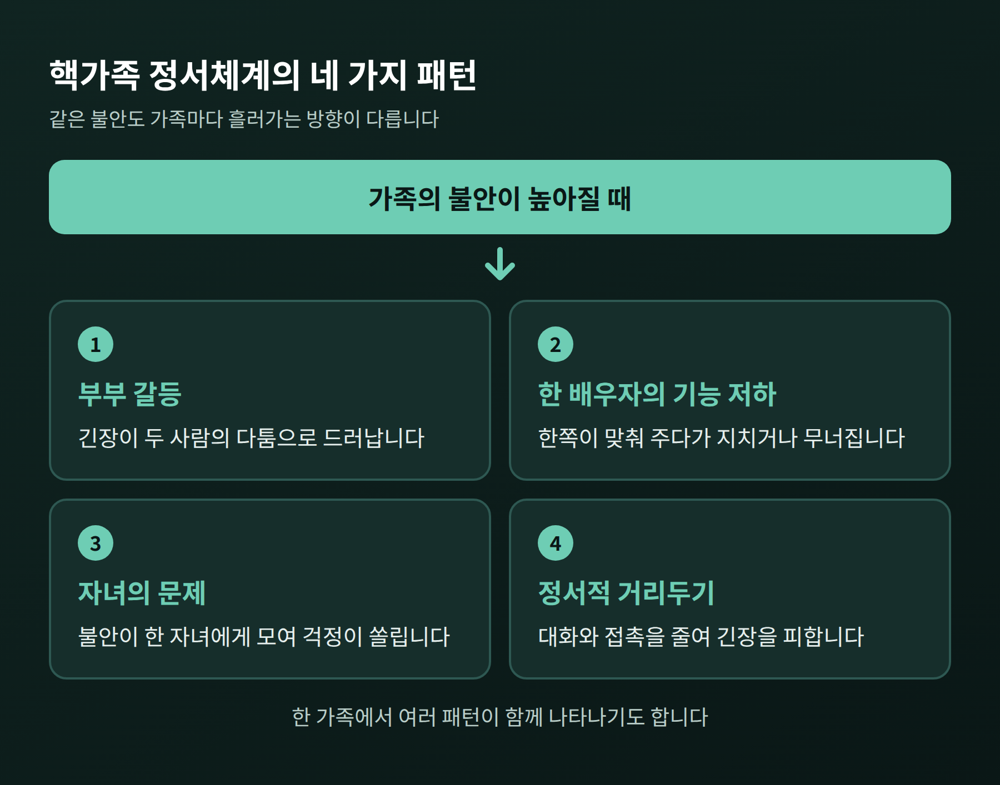
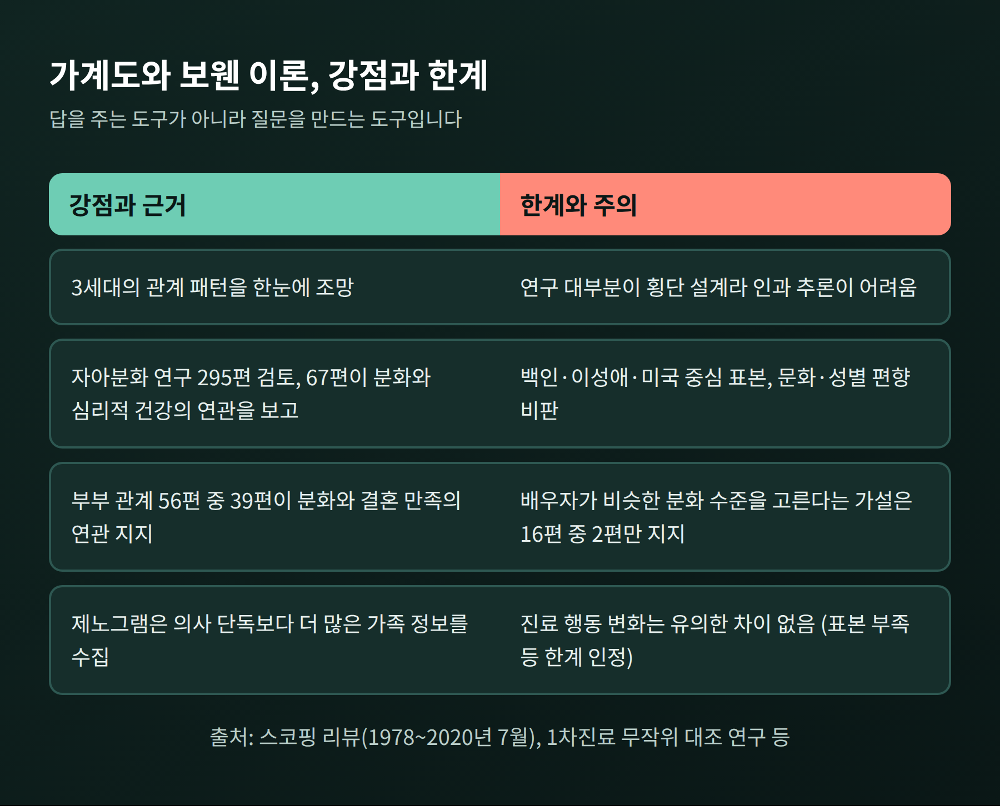

가족 안에서 비슷한 갈등이 세대를 건너 되풀이되는 경우가 있습니다. 이번 글에서는 그 패턴을 한 장의 그림으로 읽어내는 가계도(제노그램)와, 그 바탕이 되는 보웬 가족체계이론을 정리해 보겠습니다.
요약하면 이렇습니다. 가계도는 가족을 3세대 이상에 걸쳐 그린 지도이고, 보웬 이론은 그 지도에서 무엇을 읽어야 하는지 알려 주는 해석의 틀입니다.
이 글의 사례는 설명을 위해 만든 가상의 가족이며, 실제 특정인과 무관합니다.
가계도는 가족 구성원과 그 관계를 기호로 그린 그림입니다.
사각형은 남성, 원은 여성을 나타냅니다. 기호 안에는 나이를, 아래에는 이름과 출생·사망 연도를 적습니다. 건강 상태, 직업, 갈등 이력 같은 정보도 덧붙입니다.
기호 사이의 선은 결혼이나 혈연만 보여 주지 않습니다. 친밀한 관계, 갈등하는 관계, 소원한 관계를 서로 다른 선으로 구분해 그립니다.
보통 조부모, 부모, 자녀의 3세대를 그립니다. 보웬 본인도 가족 다이어그램을 “최소 3세대”에 걸친 자료를 다루는 도구로 소개했습니다.
이 그림의 뿌리는 머레이 보웬에게 있습니다. 보웬은 1950년대 미국 국립정신건강연구소(NIMH)에서 성인 조현병 환자의 가족을 연구했고, 이후 조지타운대학교에서 연구를 이어갔습니다. 그는 가족을 하나의 정서적 단위로 보았고, 방대한 관찰 자료를 정리할 방법으로 가족 다이어그램을 썼습니다.
지금의 표준 기호는 1985년 McGoldrick과 Gerson의 저서 『Genograms in Family Assessment』를 통해 널리 퍼졌습니다. 다만 보웬 자신은 제노그램을 자기가 발명한 것은 아니라고 말했다고 전해집니다.

보웬 이론의 가장 큰 전제는 이렇습니다. 개인의 문제는 개인 안에서만 생기지 않고, 가족이라는 정서 체계 안에서 함께 만들어진다는 것입니다.
예전에는 문제를 겪는 한 사람을 '환자'로 보는 시각이 중심이었습니다. 보웬은 그 사람을 둘러싼 관계망 전체를 보자고 했습니다.
보웬 센터는 이 이론이 여덟 개의 서로 맞물린 개념으로 이루어져 있다고 소개합니다. 자아분화, 삼각관계, 핵가족 정서과정, 가족투사과정, 다세대 전수과정, 정서적 단절, 형제자매 위치, 사회적 정서과정입니다.

여덟 개념을 모두 외울 필요는 없습니다. 이 그림을 읽을 때 특히 자주 쓰이는 네 가지만 짚어 보겠습니다.
보웬은 자아분화를 이론의 초석이라고 불렀습니다. 스트레스 속에서도 관계 체계의 영향에 휩쓸리지 않는 '견고한 자기'의 수준을 뜻합니다.
쉽게 말하면, 감정과 생각을 구분하는 능력입니다.
분화 수준이 낮으면 가족의 분위기에 따라 결정이 흔들립니다. 분화 수준이 높으면 강한 감정을 느끼면서도 그 감정에 지배되지 않고, 압박이 커져도 자신의 핵심 가치를 지킵니다.
예를 들어 배우자가 짜증을 내자 자기 취미를 바로 포기하는 것은 반응적으로 맞추는 모습입니다. 두 사람의 필요를 모두 고려한 계획을 함께 세우는 쪽이 더 분화된 반응입니다.
주의할 점이 하나 있습니다. 보웬은 분화를 저분화에서 고분화까지 이어지는 연속선으로 설명했지만, 사람을 특정 점수에 배정하는 검사 도구로 만든 것은 아닙니다. 스트레스 정도나 가족과의 접촉에 따라 같은 사람도 달라 보이기 때문입니다. '나는 몇 점'이라는 식의 단정은 이 이론의 취지와 맞지 않습니다.
보웬은 두 사람의 관계를 근본적으로 불안정하다고 보았습니다. 긴장이 높아지면 한쪽이 제3자를 끌어들여 압력을 덜어내는데, 이것이 삼각관계입니다.
가상의 예를 들어 보겠습니다. 부부가 대화를 피하며 냉랭하게 지냅니다. 어머니는 불안해지면 고등학생 딸에게 남편 흉을 털어놓습니다. 딸은 어머니를 위로하고 아버지 눈치를 봅니다.
부부 사이의 긴장은 줄어든 것처럼 보입니다. 그러나 부부의 핵심 갈등은 그대로 남아 있고, 딸은 어느새 부모 사이의 중간 전달자가 됩니다.

삼각관계가 나쁜 것만은 아닙니다. 차분한 제3자가 있으면 체계가 오히려 진정되기도 합니다. 문제는 그것이 갈등을 풀지 않은 채 굳어질 때입니다.
그림에서는 이런 구도가 여러 세대에 걸쳐 같은 모양으로 나타나는지를 살펴봅니다.
가족의 불안이 높아지면 네 가지 패턴 가운데 하나 이상이 나타난다고 봅니다. 부부 갈등, 한 배우자의 기능 저하, 자녀의 문제, 정서적 거리두기입니다. 같은 불안이라도 가족마다 흘러가는 방향이 다릅니다.

이 가운데 자녀 쪽으로 흐르는 경우를 가족투사과정이라고 합니다. 부모가 자기 불안을 한 자녀에게 집중하는 방식입니다. 끊임없이 걱정하고 맴돌면서, 두려워하던 결과를 오히려 키우는 일이 생깁니다.
보웬 센터는 부모가 자기 불안을 스스로 다루고 부부 문제를 풀어 가면 자녀의 기능이 나아지는 경향이 있다고 설명합니다. 아이를 고치기 전에 어른의 불안을 먼저 본다는 뜻입니다.
투사가 한 세대에서 끝나지 않고 반복되면 분화 수준의 작은 저하가 쌓입니다. 이것이 다세대 전수과정입니다. 이 그림은 이 흐름을 눈으로 확인하게 해 줍니다.
정서적 단절은 이 흐름에서 자주 등장하는 기제입니다. 보웬은 부모와의 미해결 애착의 강도를 부인하고, 실제보다 더 독립적인 척하는 것이라고 설명했습니다.
연락을 끊으면 불안이 사라질 것 같지만, 밑에 깔린 정서적 강도는 그대로 남습니다. 회피를 통해 불안을 다루는 셈입니다.
가상의 가족을 이어 보겠습니다. 할아버지와 갈등하던 아버지는 청년기에 집을 떠나 연락을 거의 끊었습니다. 이후 아버지는 가정에서 거리를 두는 쪽이었고, 어머니는 불안을 큰딸에게 쏟았습니다. 큰딸은 성인이 되자 자기 부모와 일부러 멀리 지내는 길을 택했습니다.
세 세대의 그림을 나란히 놓으면 '거리두기'라는 같은 모양이 보입니다. 당사자들은 각자 자기 사정이라고 여겼겠지만, 그림으로 보면 하나의 흐름입니다.
보웬식 상담자는 치유자보다 코치에 가깝습니다. 소크라테스식 질문으로 내담자가 스스로 패턴을 발견하도록 돕고, 면담은 차분하고 반응성이 낮게 이끕니다. 상담자 본인도 자기 원가족 작업을 해야 한다고 봅니다.
대표적인 개입은 다음과 같습니다.
정보는 가족의 이야기에서 모읍니다. 여러 구성원의 이야기를 들을수록 관점이 넓어지고, 반복되는 패턴이 드러납니다.
자아분화는 보웬 이론 가운데 연구가 가장 많이 쌓인 개념입니다. 1978년부터 2020년 7월까지 나온 295개 연구를 검토한 스코핑 리뷰에서, 67개 연구가 분화 수준이 높을수록 심리적 건강이 좋고 고통이 낮다고 보고했습니다. 부부 관계를 다룬 56편 중 39편은 분화가 높을수록 결혼 만족이 높고 갈등이 낮다는 결과를 지지했습니다.
세대 간 전수도 검증되고 있습니다. 2024년 리투아니아 부모 348명을 대상으로 한 연구에서는 원가족의 정서적 어려움이 부모의 분화 저하, 부부 만족과 공동양육의 질 저하를 거쳐 자녀의 심리적 어려움으로 이어지는 경로가 나타났고, 삼각화가 핵심 연결 고리였습니다. 다만 이 모형이 설명한 자녀 어려움은 18%였습니다. 나머지 82%는 다른 요인의 몫이라는 뜻입니다.

한계도 분명합니다.
그러니 가계도는 답을 알려 주는 도구가 아니라 질문을 만들어 주는 도구입니다. '우리 집은 원래 이렇다'는 체념 대신 '이 모양은 어디서 시작되었을까'라는 질문을 던지게 해 줍니다.
혼자 제노그램을 그려 보는 것은 자기 가족을 이해하는 좋은 출발점입니다. 세 가지만 기억해 두시면 좋겠습니다.
첫째, 사실과 해석을 나눠 적습니다. '연락이 끊겼다'는 사실과 '나를 싫어해서'라는 해석은 다른 칸에 둡니다.
둘째, 한 사람을 원인으로 지목하지 않습니다. 이 이론은 누구의 잘못을 가리는 틀이 아니라, 관계의 흐름을 보는 틀입니다.
셋째, 가족의 사생활을 존중합니다. 정보를 모을 때는 동의가 필요하고, 그림을 타인에게 공유할 때도 조심해야 합니다.
정리하면 이렇습니다. 제노그램은 가족의 이야기를 한눈에 볼 수 있게 펼쳐 놓은 그림이고, 보웬 이론은 그 그림 속 반복을 읽는 안경입니다.
“패턴을 보는 순간, 패턴에서 한 걸음 물러설 수 있습니다.”
다만 그림이 모든 것을 설명하지는 못합니다. 오래된 상처나 끊어진 관계를 혼자 들여다보다 보면 마음이 더 무거워질 수도 있습니다. 가족 문제로 일상이 힘들거나, 같은 갈등이 계속 반복된다고 느껴진다면 혼자 감당하지 마시고 가족상담을 다루는 전문 상담사나 상담기관을 찾아 도움을 받아 보시길 권합니다. 이 글은 일반적인 정보 제공을 위한 것이며, 진단이나 치료를 대신하지 않습니다.
가족의 그림을 천천히 들여다보는 일은, 결국 지금의 나를 이해하는 일로 이어집니다.